This content will help Engineers, and architects learn about industrial or, warehouse building safety management and help to achieve certificates easily. It’s not easy to get building certificates and this article will help us to know about the step-by-step process to implement building safety in our own business zone and apply to achieve international certificates.
Evacuation map

In case of emergency:
-
Don’t panic
-
Leave the building in CALM by the nearest exit
-
USE STAIRWAY for the exit, do not use the elevator
-
DO NOT stop to collect belongings
-
Report to ASSEMBLY POINT at parking yard of Ground Floor
-
DO NOT return to the building until the building was declared safe
Causes of change

Image: cause of changes
Classification of Issues
| Categories | Issues/Terms |
|---|---|
| A – Minor | • Lower Risk |
| • Approved to begin/continue business | |
| • Suppliers are requested to correct, reduce or eliminate these issues. | |
| B – Major | • Medium Risk |
| • Conditionally Approved | |
| • Remediation is required within 12 months from the time of discovery of issues. | |
| • Repeated failure to act to correct these issues will result in the termination of the business relationship with the customer. | |
| C – Critical | **• High Risk |
| • Conditionally Approved | |
| • Remediation is required within 6 months from the time of discovery of | |
| issues. | |
| • Repeated failure to act to correct these issues will result in the termination | |
| of the business relationship with the customer.** | |
| D - Zero Tolerance | **• Extremely High Risk - Egregious and unacceptable to the company and its customers. |
| • The company must not start a business with suppliers with this issue. | |
| • For existing suppliers, failure to act immediately to correct these issues | |
| shall result in the termination of the business relationship with the customer.** |
Table: Classification of issues in building safety management
Safe Places to Work
Suppliers should promote and maintain a safe, hygienic, and healthy working environment and residential facilities, where provided. Adequate measures, systems, protections, and training must be implemented to prevent harm to employees’ health, safety and well-being.

Image: Safe place to work
Supplier shall appoint an OHS team, along with the certified OHS safety expert to be responsible for, maintain and evaluate the OHS system in the factory.
| • Laws, Rules and Regulations • Policy and Procedures • Hazardous and Dangerous Work • Machine Safety • First-Aid • Food Safety and Hygiene • Facilities/ Amenities • Employee Health and Safety (EHS) Committee • Hazard Identification and Risk Assessment • Training and Education • Emergency Preparedness • Emergency Exits and Emergency Lighting • Incident Investigation • Fire Safety Management | • Chemical Safety • Hearing Protection • Obsolete/Prohibited Technology and Equipment • Container Labeling • Stair Railing and Guards • Electrical Safety • Control of Hazardous Energy (Lockout and Tagout) • Heat Stress • Bloodborne Pathogens • Powered Motor Vehicles • Ergonomics • Work from Height • Confined Space • Aboveground (AST) and Underground (UST) Storage Tanks |
Image: Safe places to work

Zero Tolerance / Critical / Major - EHS
| Issue keys |
|---|
| **ZE002-Blocked / Locked Emergency Exits |
| ME008: Inadequate and/or malfunctioning emergency exits |
| ME002: Inadequate and/or malfunctioning firefighting equipment |
| ME014: Lack of legally-required automatic fire suppression system |
| ME015: Inadequate fire alert system** |
| **ZE005: Immediate fire hazard from unsafe chemical management |
| ZE004: Immediate fire hazard from unsafe electrical conditions** |
| **ME012: Inadequate Electrical Safety |
| ****ZE003-Potential Structural Collapse |
| ****ME019: Lack of valid fire safety and/or building and construction certification |
| ME013: Lack of inspection of lightning protection system** |
Table: Issuekeys in EHS
ZE002: Blocked or locked emergency exit(s)
Customer code standard
Suppliers should ensure at least two emergency exits are provided on each floor of all facilities including dormitories, if any, or must adhere to the local legal requirements. Each emergency exit should have doors that open outwards and remain unlocked and free from obstruction at all times.
ZE002: Blocked or locked emergency exit(s)
The importance of compliance
• Used in case of an emergency such as a fire.
• Must not be blocked or locked, and the access area behind them must not be obstructed

Image: Importance of compliance
CASE STUDY

Image: a case study
IMPROVEMENT
| Before improvement | After improvement |
| 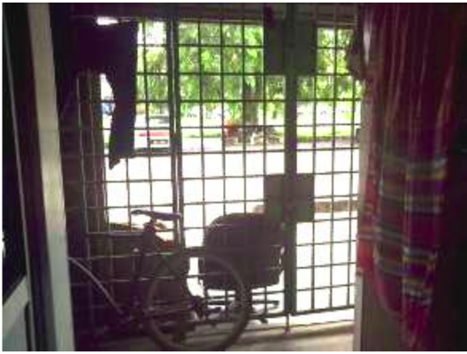 | 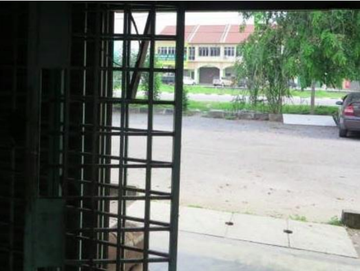 |
| 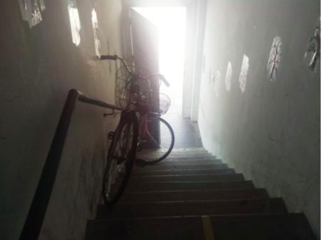 | 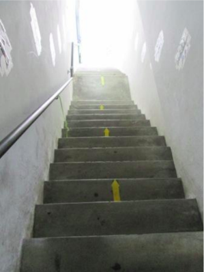 |
Table: Importance of emergency exits preparation
CRITICAL
ME008: Inadequate and/or malfunctioning emergency exits
Customer code standard
Suppliers should ensure at least two emergency exits are provided on each floor of all facilities including dormitories, if any, or must adhere to the local legal requirements. Each emergency exit should have doors that open outwards, remain unlocked, and are free from obstruction at all times. The emergency exit door(s) should resist fire for at least 30 minutes.
The importance of compliance
- Can be spotted easily.

Image: Malfunctioning emergency exits
The importance of compliance (continued).
• Strategically located (e.g. in a stairwell, or hallway)
• Made of fire-resistant materials with at least a 30-minute fire-resistance rating.

Image: Emergency exits quality guidelines
ME002: Inadequate and/or malfunctioning firefighting equipment
Customer Code Standard
• Local emergency response arrangements/agreements should be made with the appropriate
local authorities, such as emergency management and law enforcement agencies, and community
medical responders.
• Suppliers shall ensure the installation of adequate, appropriate, and easily accessible fire
prevention and firefighting equipment at the workplace, dormitories, canteens, and other
premises, as required by applicable law and regulations. Fire extinguishers shall be installed
according to laws and regulations, along with appropriate, brightly colored, and visible signage.
The internal pressure of the fire extinguishers shall be properly maintained.
• There should be regular inspections and maintenance of the fire-control facilities and equipment
(including fire control panel, fire water pump, water tank, fire extinguishers, hose reel, lightning
protection device, alarms, etc.) with records maintained. The firefighting equipment provided should
be suitable for the type of fire expected in the area.
• Fire-control facilities and equipment should be tested regularly as required. For example, fire
alarms should be tested monthly and fire water pumps should be tested at least annually.
• The relevant authorities should approve the fire-control facilities and new, additional, and/or
altered equipment.
• Employees who have firefighting responsibilities should receive at least annual training by a
certified firefighter and/or relevant authorities on the use of firefighting equipment and personal
protective equipment, procedures, roles, responsibilities, etc.
The importance of compliance
• Identify the type of each fire situation
| 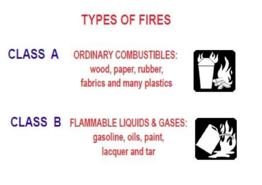 | 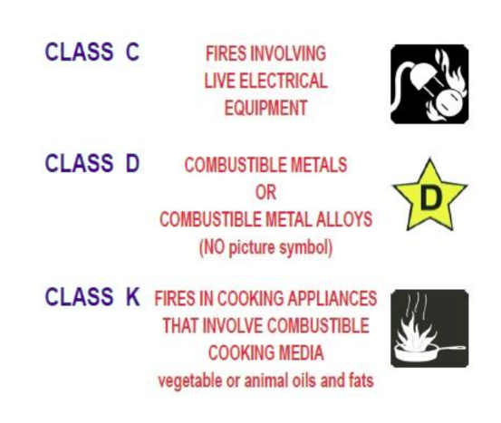 |
| Proper type, quantity, location and adequacy of fire equipment | 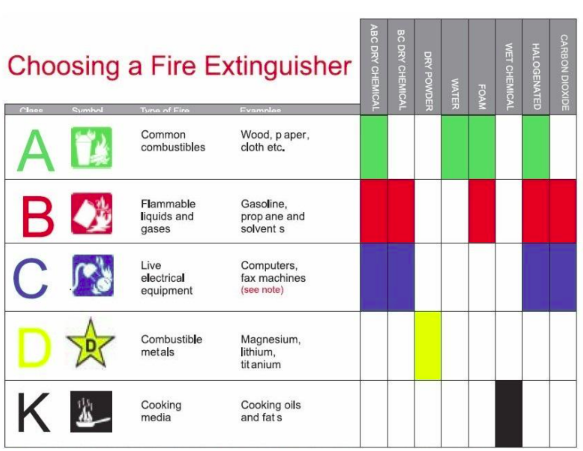 |
| Proper type, quantity, location and adequacy of fire equipment | 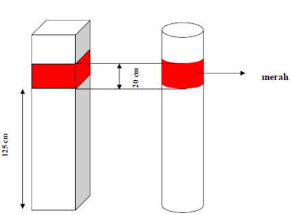 |
| Proper type, quantity, location and adequacy of fire equipment 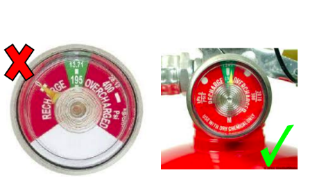 | 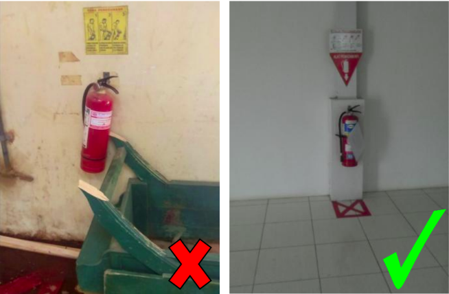 |
| Identify and assign responsibility to employees who can be trained to use firefighting equipment effectively | |
| Well maintained to function properly 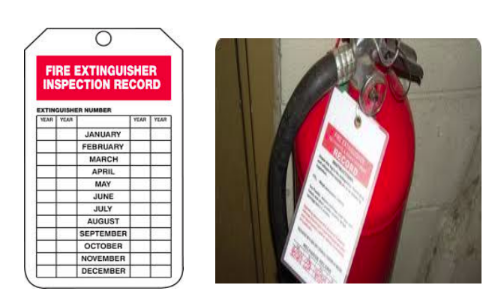 | 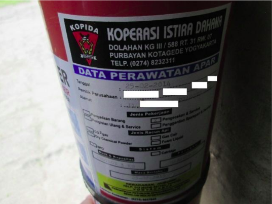 |
Table: Importance of emergency exits
ME014: Lack of legally-required automatic fire suppression system
Customer code standard
• Suppliers shall ensure the installation of adequate, appropriate, and easily
accessible fire prevention and firefighting equipment (e.g. automatic fire suppression
system)
• There should be regular inspection and maintenance of the automatic fire
suppression system (e.g. sprinkler system with water, BMT, FM 200 or individual dry
power, etc.)
The importance of compliance
• Automatic fire suppression shall be installed


• Automatic fire suppression systems are designed to reduce the level of damage

• Automatic fire-suppression systems are widely used and highly reliable when properly specified,
designed, installed, inspected, tested and maintained.
• Automatic suppression systems may be classified as water-based or non-water-based

Image: Water and non-water-based system
• installed and maintained in accordance with manufacturers’ instructions and applicable, recognized standards.
• Automatic sprinkler systems are extremely effective and reliable when they are properly maintained, and can be installed in all types of commercial and residential buildings.


ME015: Inadequate fire alert system
Customer code standard
• Suppliers shall ensure the installation of adequate, appropriate, and easily accessible fire prevention and firefighting equipment (e.g. fire alert system) at high-risk workplaces including materials or finished goods warehouse, as required by applicable law and regulations.

• There should be regular inspection and maintenance of the fire alert system (e.g. siren, PA, voice alarm systems, or strobe light) installed in the factory buildings with records maintained.

• Fire control facilities and equipment should be tested regularly as required. For example, the siren, PA, etc., should be tested monthly.

• Every building and site should have a set of effective systems to alert employees.
• Small factory buildings may only require relatively simple alert systems (e.g., siren, PA or strobe light), whereas large sites or buildings with multiple floors may require complex multi-station, multi-zoned systems.


• Upon activation of a manual fire alarm station, the alarm system should operate alarm signals that can be heard throughout the facility.
• All fire alarm systems must have an adequate–backup power


ZE005: Immediate fire hazard from unsafe chemical management
Customer Code Standard
• Suppliers shall ensure policy, procedures, and all necessary controls are in place for the
management, storage, dispensing, and transportation of all combustible, flammable and explosive
materials according to the law, in order to minimize the potential for fire impacts.
• All combustible, flammable, and explosive chemicals or materials should be stored in a designated
area, which is well-ventilated, spark-proof, equipped with sufficient fire-fighting equipment, away from
direct sunlight and heat, ignition sources and pressure relief valves, electrostatic discharge proof, and
protected from leaks.
• Explosion-proof equipment and lighting should be used in areas where flammable or combustible
materials are stored.
• Smoking near the area of flammable and combustible materials is strictly prohibited. “No Smoking”
signs must be posted where appropriate and “No Smoking” rules must be enforced in areas where
flammable or combustible materials are used or stored. Smoking should only be allowed in
designated safe areas that are far from restricted areas.
The importance of compliance
• Many workplace fires have been caused by careless behavior involving chemical hazards such as combustible, flammable, or explosive materials.

• Flammable/combustible materials must be stored in purpose-built, designated areas.

Remember
Fire Triangle!!
• Flammable/combustible materials must be stored in purpose-built, designated areas.

Case study

case 1
Improvement

improvement 1

improvement 2
Case study
Fire kills 15, injures 1 at south China ceramics factory on August 23, 2011

China’s news on fire killing in 2011
ZE004: Immediate fire hazard from unsafe electrical conditions
Customer Code Standard
| • Suppliers shall ensure suitable control measures are in place to prevent exposure to electrical fires according to the law. Electrical plugs, cords, and wiring should be maintained to ensure proper insulation, no exposed wiring, without frays, and operated within legal limits. | 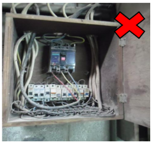 |
| • All electrical distribution panels, breakers, switches and junction boxes should be completely enclosed and protected from wet conditions to eliminate the immediate fire hazard. | 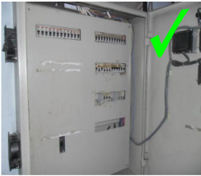 |
Table: unsafe electrical conditions
The importance of compliance :
Many fires are caused by situations involving electrical hazards, including when:
• electrical wiring, plugs, and sockets are in poor condition
• extension cords and power tools are worn or damaged
• electrical outlets are overloaded through use by numerous electrical appliances
• electrical switchboards, electrical wiring or extension cords are located or used under wet conditions
• electrical work and regular maintenance are not conducted by a qualified technician or a licensed electrician
• unsafe equipment is used that may have exposed live parts, lack earthing/grounding protection, or have substandard wiring/connections, especially for electrical plugs
The importance of compliance ( continued ) :
| • Fire frequently results from excessive heat that is produced by above-normal resistance in wiring and, more commonly, at connection points. | 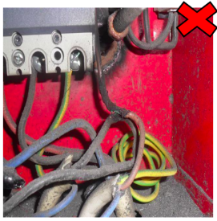 |
| • Fire hazards can be minimized through a combination of proper installation techniques, utilization of proper standard equipment, installation of proper protection devices, and ongoing adequate maintenance of electrical systems and equipment. | 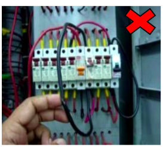 |
| • It is the responsibility of the Electrical Supervisor to conduct an electrical risk assessment and electrical safety inspection at least annually to identify electrical hazards | 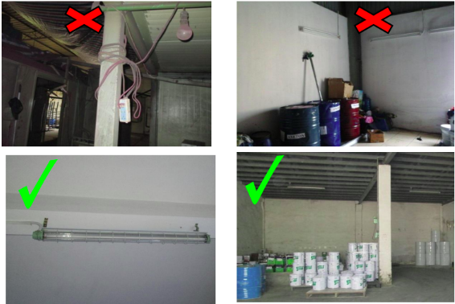 |
Table: unsafe electrical conditions
to be continued. . .